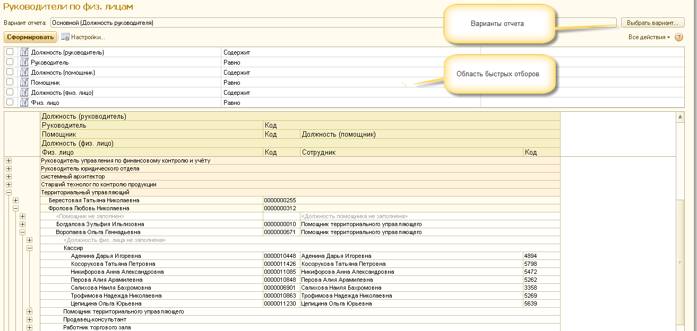

Отчет предназначен для анализа структуры подчиненности "физических лиц" в разрезе "Руководителей" и "Помощников территориальных управляющих" и "Должностей".
| ПРИМЕЧАНИЕ: По умолчанию отчет отображает все элементы справочника "физические лица" (не только "активные"). При этом: • помеченные на удаление физ. лица отображаются перечеркнутыми. • физ. лица у которых не установлен признак "Активен", но у сотрудника физ. лица не заполнена "Дата увольнения" (т.е. он "не уволен") выделяются красным. |
Роли для возможности работы с отчетом:
• Полные права
• Право установки руковолителей физ. лицам
• Право установки руковолителей физ. лицам (Полное)

Варианты отчета
• Основной (Структура подчиненности) - Вариант отчета, в котором данные группируются по руководителю и должности.
• Основной (Должность руководителя) - Вариант отчета, в котором данные группируются по должности руководителя, руководителю, помощниках ТУ (с должностями) и должности.
• Основной (Руководителя) - Вариант отчета, в котором данные группируются по руководителю, помощникам ТУ (с должностями) и должности.
Область быстрых отборов
Перечень быстрых отборов изменяется в зависимости от варианта отчета.
Сохранение своих вариантов отчета
Реализована возможность сохранять свои варианты отчета.